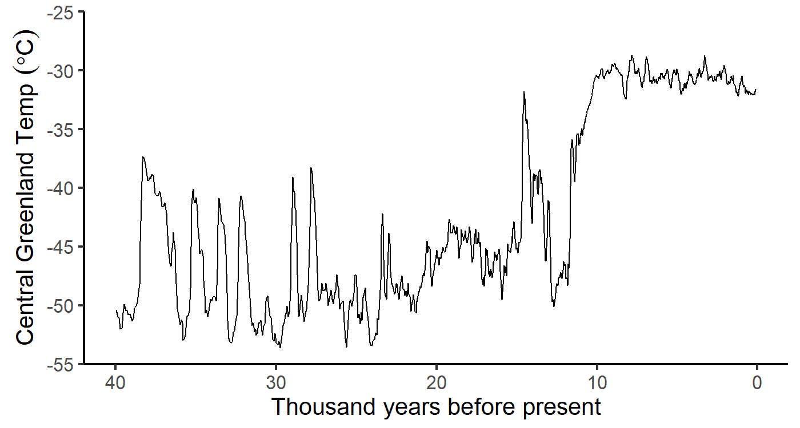
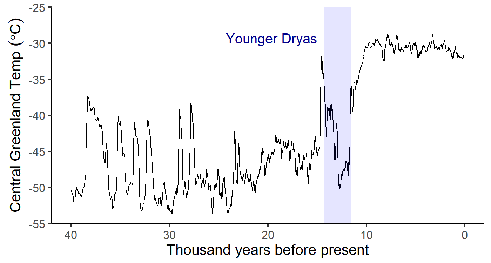
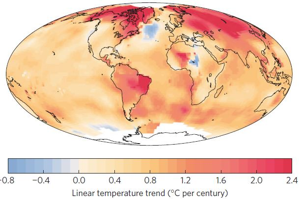
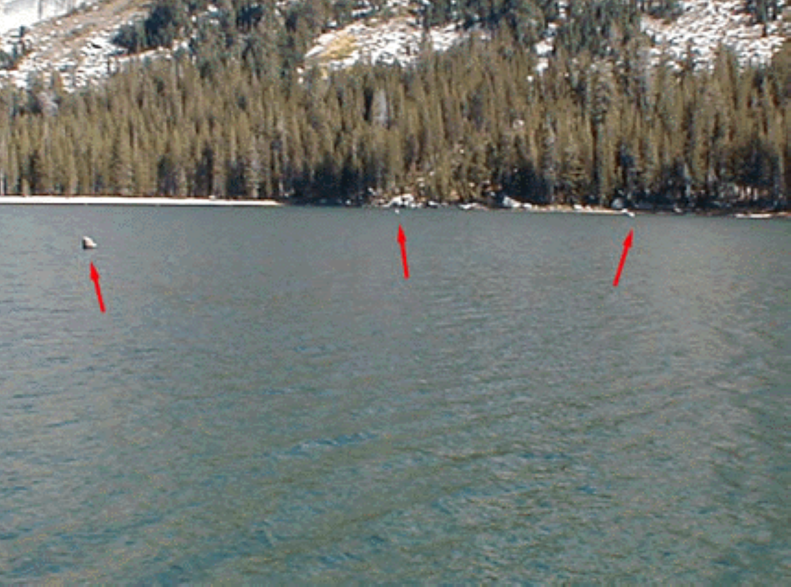
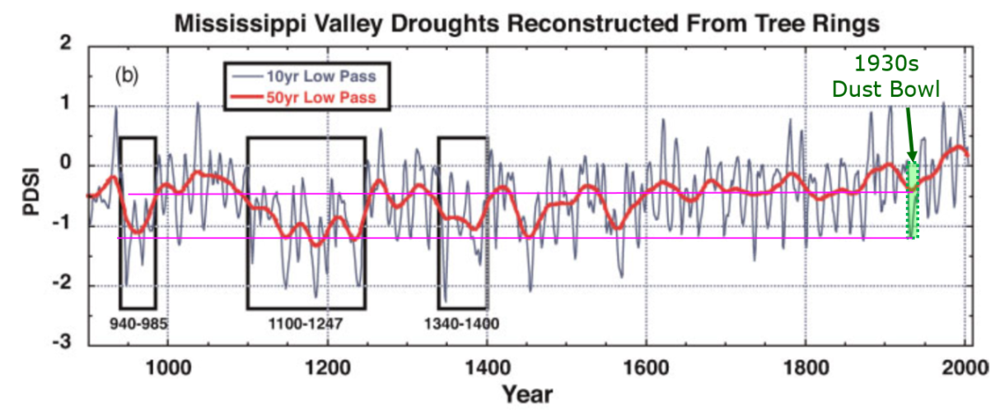
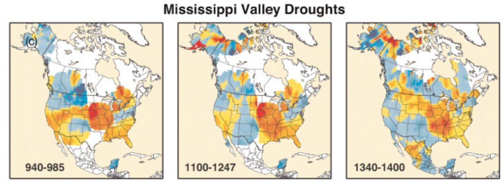

Review of Past Climates
EES 3310/5310
Global Climate Change
Jonathan Gilligan
Class #15:
Monday, Sept. 25
2018
Announcements
- No office hour today
- I have posted answers to Lab #3 on Brightspace and on the class web site.
- The midterm exam will be next Wednesday (Oct. 3)
- I have posted a practice midterm exam (with answers) on Brightspace
- We will have review for the midterm in class next Monday
- When you come to class on Oct 3, be sure to bring:
- #2 pencils and an eraser
- A calculator
- The midterm exam will have:
- 10 multiple-choice questions (4 points each)
- Short answer questions (answer in a couple of sentences to a paragraph)
- Undergraduates: 4 out of 6 (15 points each)
- Graduate students: 5 out of 6 (12 points each)
Summary of Oxygen Isotopes
- Two different uses:
- \(\delta \ce{^{18}O}\) in glacial ice tells us about air temperature:
- Greater (less negative) \(\delta \ce{^{18}O}\) means warmer temperature.
- \(\delta \ce{^{18}O}\) in sea-floor sediments (skeletons of deep-sea organisms) tells us about sea level:
- Greater (more positive) \(\delta \ce{^{18}O}\) means lower sea-level.
- During ice-age cycles, cold temperatures go with low sea-level, warm temperatures with high sea-level:
- Cold: \(\delta \ce{^{18}O}\) is lower than usual in glaciers, higher in sea-floor sediments.
- Warm: \(\delta \ce{^{18}O}\) is greater than usual in glaciers, lower in sea-floor sediments.
Abrupt Climate Change

Abrupt Climate Change

Cold Pool in North Atlantic

Warming Trend: 1900–2013
Climate in the
Last Millennium
Lake Tanaya, Yosemite

Reconstructing Megadroughts
 
Dust Bowl vs. Megadroughts
-
1930s “Dust Bowl”
-
6 years
-
25% reduction in rainfall in plains states
-
Hundreds of thousands of refugees
-
Medieval Megadroughts:
-
Multiple droughts
-
60 years or longer (up to 240)
-
40% reduction of rainfall in plains states